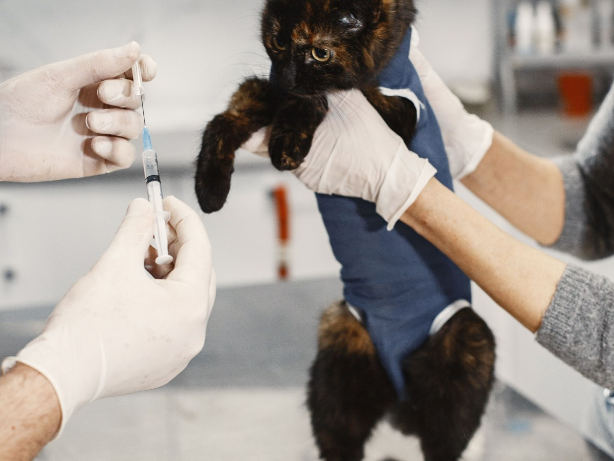
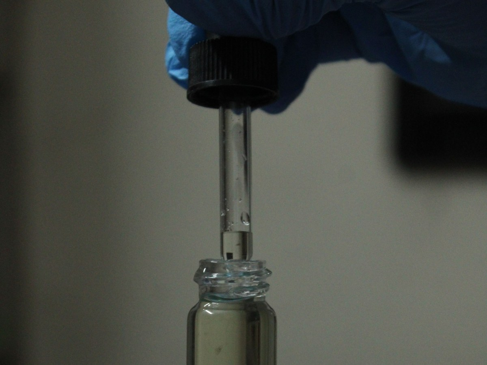
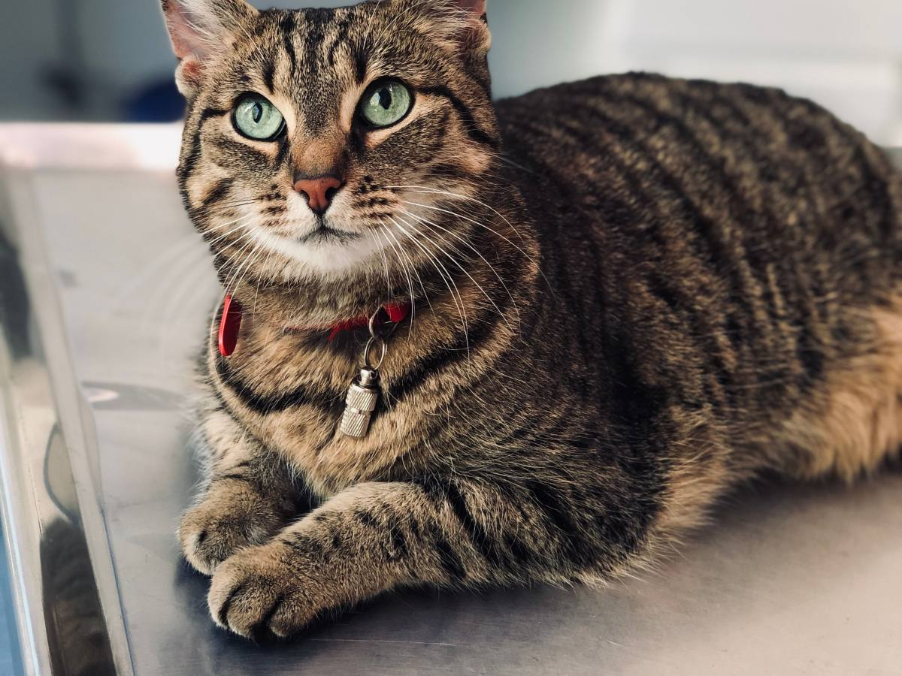
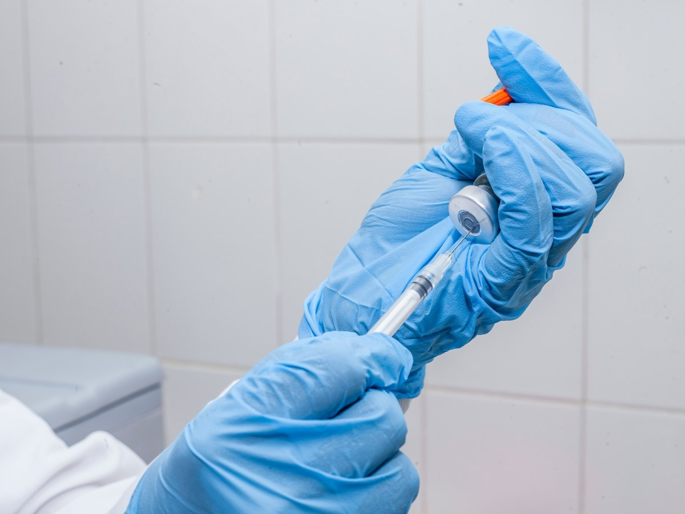
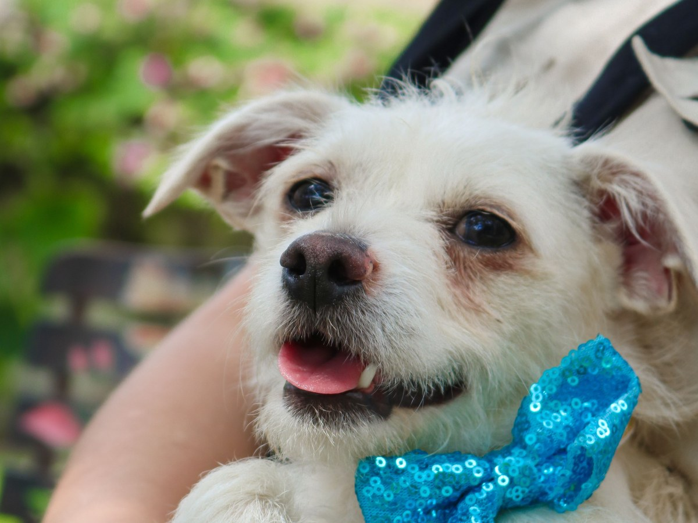
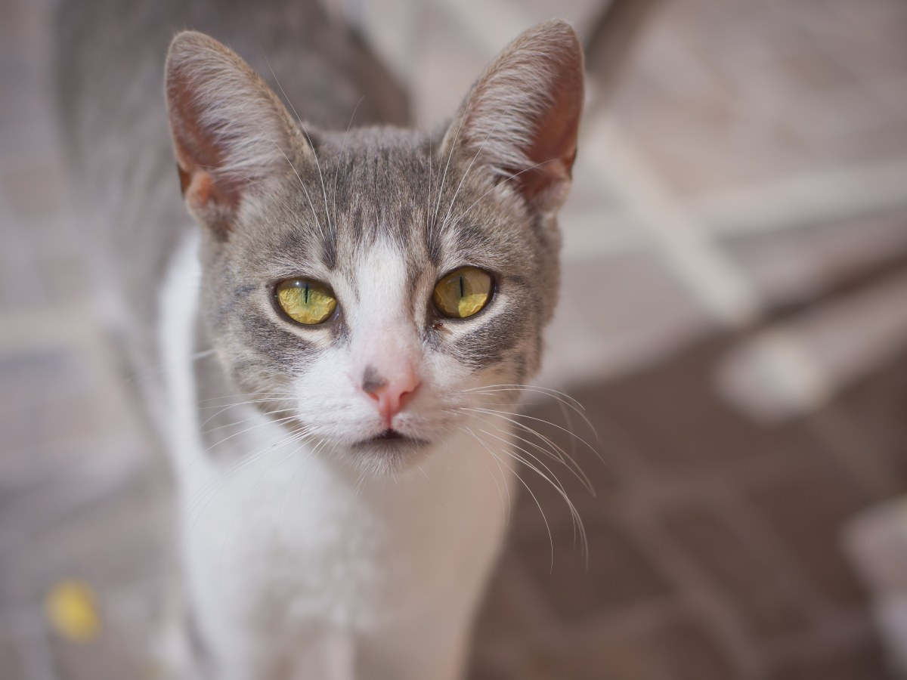

La Florida · Diego Portales 1594
Todo lo de tu mascota, en una sola ficha.
Clínica Veterinaria Dr. Roy: 162 reseñas, un 4,7 y abierta todos los días.
- 162reseñas en Google
- 4,7de promedio
- 7días a la semana abierta
- 0páginas propias: sólo Instagram
La ficha de tu mascota
¿Qué guarda la clínica, y para qué te sirve?
Ficha clínicaLuna · gata
- Vacunas
Triple felina 03-2026 · la próxima 03-2027
- Peso
2,9 → 3,4 → 3,8 kg
- Exámenes
Hemograma 11-2025: normal.
- Notas
Come bien. Control en marzo.
Una ficha inventada, para mostrar lo que se anota.
Siempre en el mismo lugar
El peso de hoy se compara con el del año pasado, y la vacuna no se atrasa.
Si viajas o te cambias
Pide una copia por WhatsApp y llévala al veterinario que te toque.
Desde cachorro
«Traigo a mi gatita desde bebé», dice una reseña. Eso es una ficha completa.
Una ficha completa recuerda lo que tú olvidas.
Qué se atiende
En la consulta
-

Consulta
Control y consulta
Perros y gatos, con su ficha al día.
-

Vacunas
Calendario al día
Con la fecha de la próxima dosis.
-

Peso
En cada visita
Para ver cómo cambia con los años.
-

Exámenes
Resultados guardados
En la ficha, no en un cajón.
-

Peluquería
Baño y corte
Sus reseñas nombran al peluquero.
-

Gatos
Desde bebés
Sin apuro en la mesa.
Servicios de ejemplo, salvo la peluquería, que sale en sus reseñas de Google. La clínica confirma el resto.
«Excelente atención, muy acuciosa y dedicada».
Una reseña de Google
Los de la casa
Perros, gatos y carpetas
Fotos de referencia: ninguna es de la clínica.
Dónde está
Diego Portales 1594, local 3
- +56 9 9390 0742
- Lun a sáb
- 11:00–15:00 · 16:00–20:00
- Domingo
- 11:00–15:00 · 16:00–19:00
- @dr.roylaflorida
Abre todos los días, con una pausa entre las 15 y las 16.
Diego Portales 1594 Abrir en Google Maps
Para el Dr. Roy
Qué es real y qué falta
Lo verificado
Dirección, WhatsApp, horario, reseñas e Instagram, al 13-09-2026.
Lo de ejemplo
La ficha de Luna, los servicios y las fotos.
Lo que falta
Una web propia con agenda: su Instagram pide iniciar sesión, y quien no tiene cuenta no ve ni el horario.